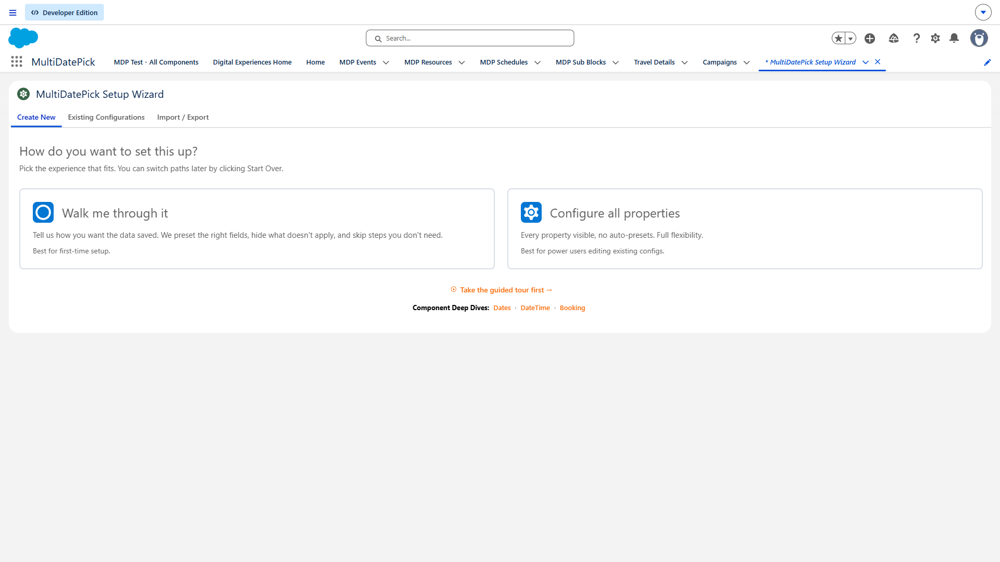
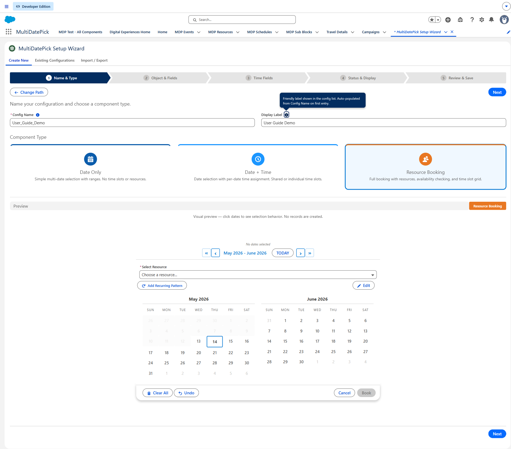
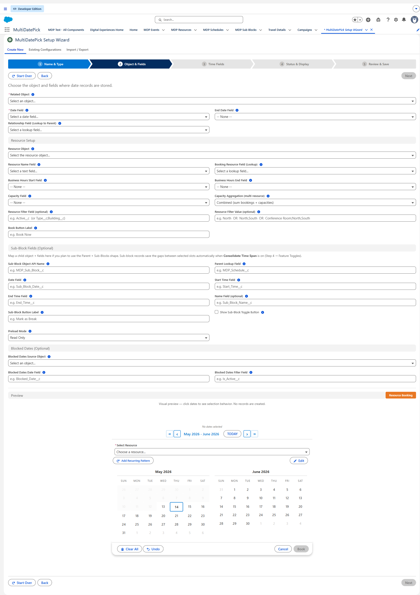
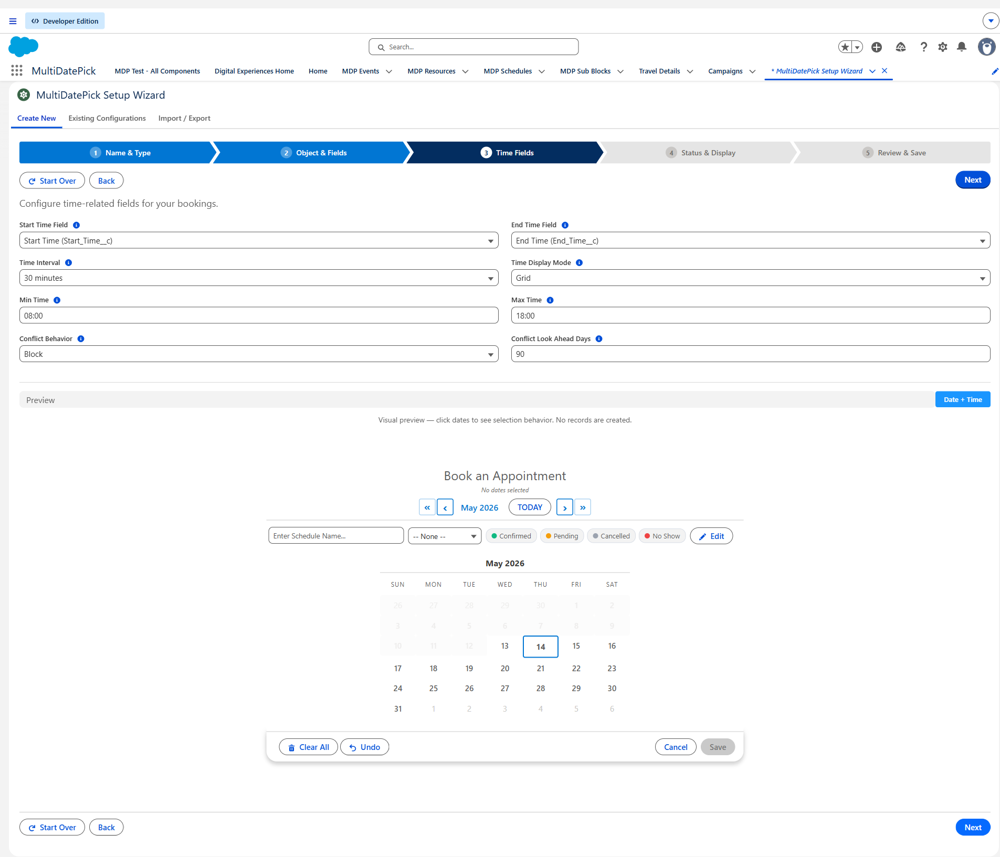
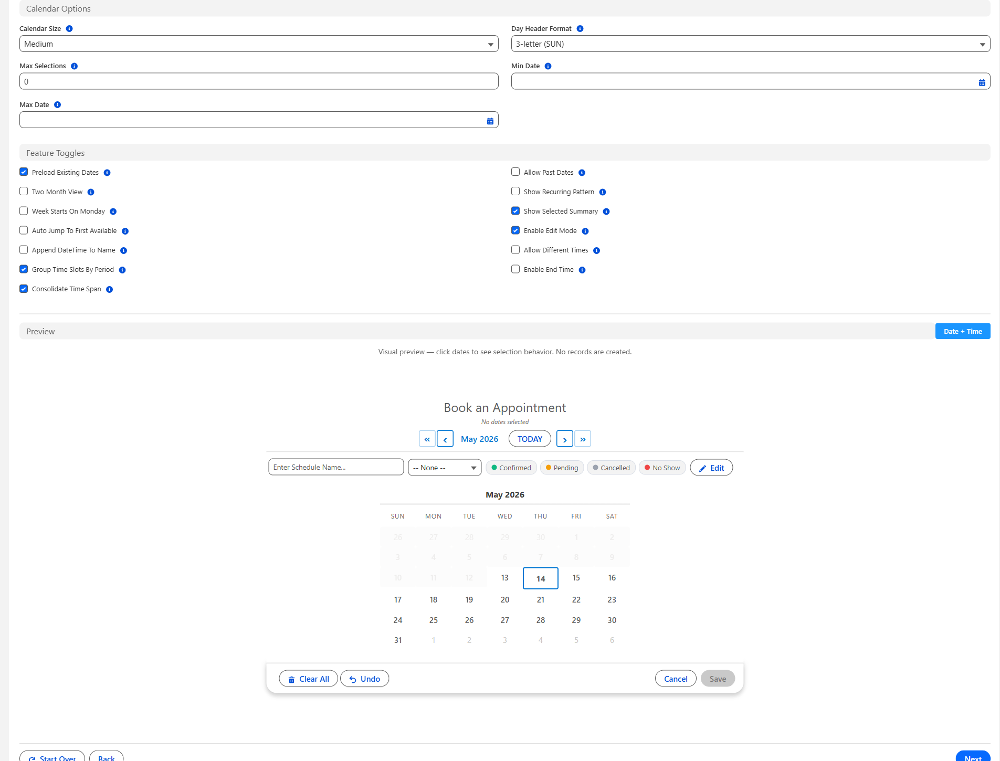
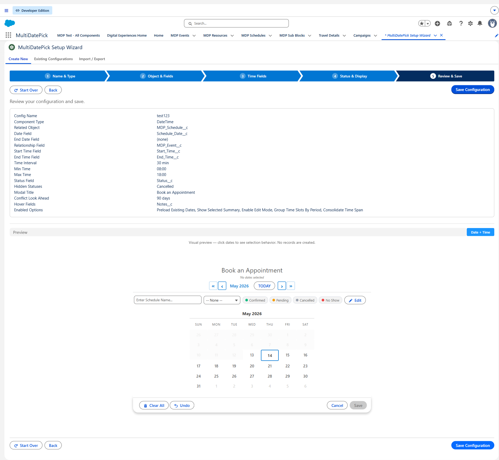
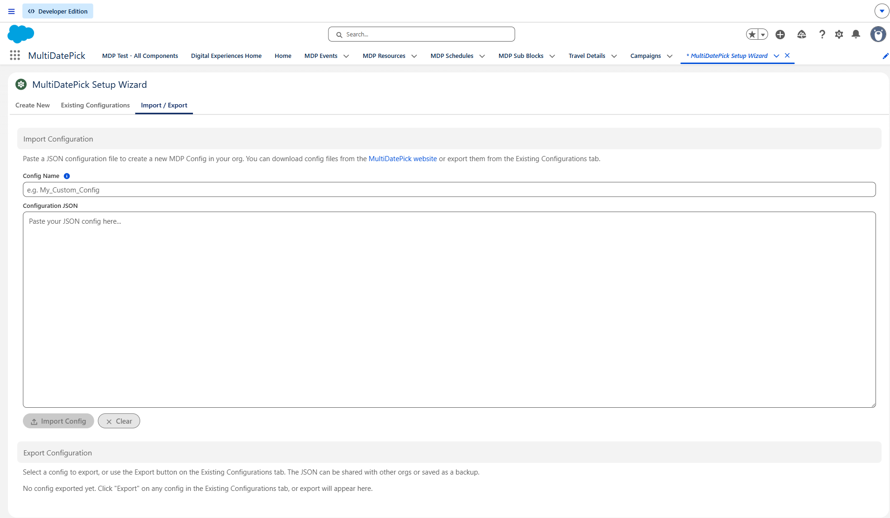
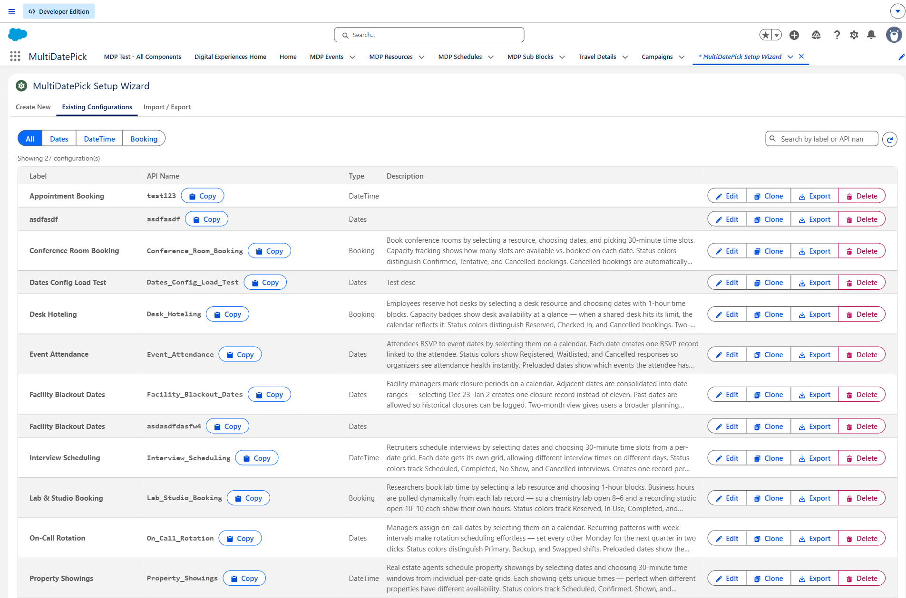
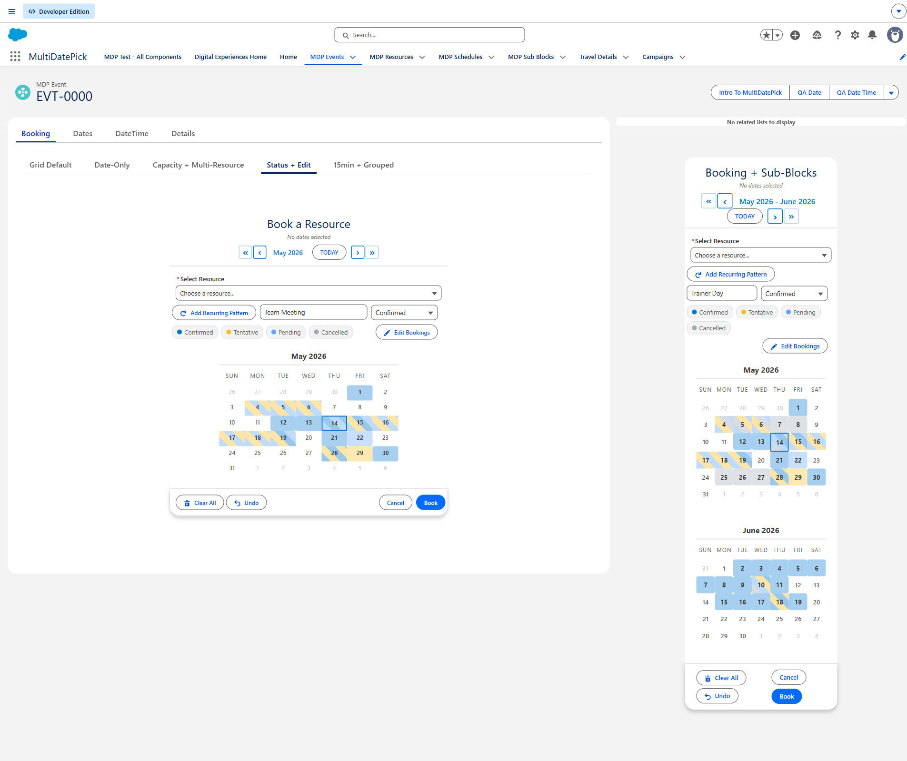
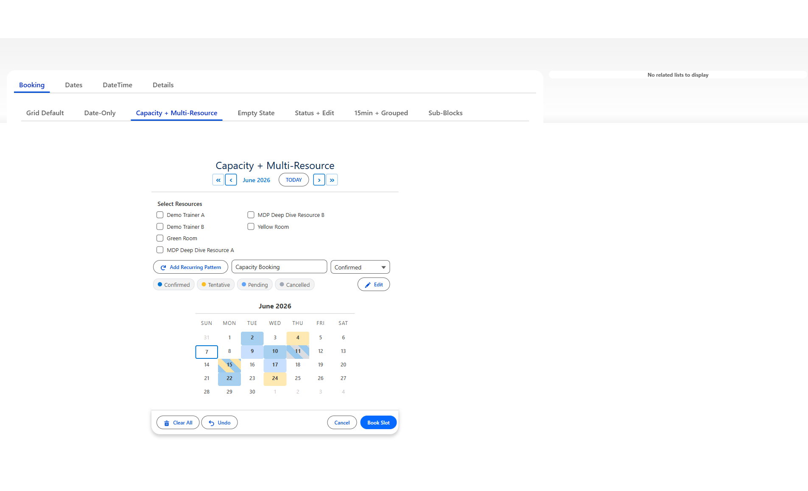

MultiDatePick User Guide
Every component, every prop, every gotcha - in the order an admin would meet them.
Contents
- The three components
- Data shapes
- Setup Wizard walkthrough
- Click to Save vs Flow-Managed Save
- Status colors & edit mode
- Views — five layouts, one component
- Resource booking
- Blocking dates, times & resources
- Common gotchas (FAQ)
- Object & field mapping
- Apex sample code
- Security & accessibility
- Questions / bugs
1. The three components — when to use each
MultiDatePick ships three Lightning Web Components on a shared base. Pick the one that matches your data shape:
multiDatePickDates
Simple multi-date selection. Best for RSVPs, attendance, blackout-date entry, holiday calendars.
multiDatePickDateTime
Dates plus time slots. Best for classes, appointments, training blocks, daily schedules with morning/afternoon sessions.
multiDatePickBooking
Dates + times + resource lookup. Best for room booking, equipment scheduling, multi-resource events, capacity-aware reservations.
Feature comparison
Features cascade upward: anything available on Dates is also available on DateTime and Booking. DateTime adds time. Booking adds resources + capacity on top of that.
| Feature | Dates | DateTime | Booking |
|---|---|---|---|
| Available on all three components | |||
| Date selection | ✓ | ✓ | ✓ |
| Status colors | ✓ | ✓ | ✓ |
| Blocked dates | ✓ | ✓ | ✓ |
| Preload existing records | ✓ | ✓ | ✓ |
| Edit mode | ✓ | ✓ | ✓ |
| Recurring patterns | ✓ | ✓ | ✓ |
| DateTime & Booking only | |||
| Time slots | ✓ | ✓ | |
| Sub-block records | ✓ | ✓ | |
| Booking only | |||
| Resource picker | ✓ | ||
| Capacity badges | ✓ | ||
2. Data shapes — when to use each
Data shape is the combination of three independent choices. Pick any combination — the wrapper supports them all.
Dates — no times, just dates.
DateTime / Booking — each record has a start & end time.
Add-on: consolidateTimeSpan — one parent for the full time range, sub-block children for any gaps inside it.
None — Dates / DateTime, or Booking without a resource.
Single resource — Booking with a resource picker dropdown.
Multi-resource — Booking with checkboxes, one record per checked resource.
Per-click — each selected date becomes its own record. Five clicks = five records.
Per-range — contiguous dates consolidate into one record with start + end. Requires endDateField.
Worked examples — walk through the 3 questions
For each scenario below, answer 3 questions to land on a data shape. This is the same flow the Setup Wizard walks you through.

PTO request
Do you need times? — No, just dates.
Do you need a resource picker? — No resource.
Should adjacent dates consolidate? — Yes — Mon–Fri PTO should be ONE record.
→ Per-range — one record with start=Mon, end=Fri.
Conference room reservation
Do you need times? — Yes, each booking has start & end.
Do you need a resource picker? — Yes, pick one room.
Should adjacent dates consolidate? — No, each booking is its own record.
→ Single-resource booking — one record per date × time block, tied to the picked room.
Multi-room training across 3 rooms
Do you need times? — Yes, shared start & end each day.
Do you need a resource picker? — Yes, pick multiple rooms with checkboxes.
Should adjacent dates consolidate? — Yes, the training runs Mon–Fri continuously.
→ Multi-resource range — one record per room covering the full date range with shared start/end times.
Full-day training with a lunch break
Do you need times? — Yes, 9 AM–5 PM with a lunch gap.
Do you need a resource picker? — No resource.
Should adjacent dates consolidate? — Yes, plus track the lunch gap as a child record.
→ Parent + sub-blocks (via consolidateTimeSpan) — one parent for the 9 AM–5 PM range, sub-block child for the 12 PM lunch gap.
The grid — every combination
Pick the row that matches your time + resource needs, then choose per-click or per-range based on whether endDateField is mapped. Every cell is a valid configuration.
| Time + Resource | Per-click (no endDateField) |
Per-range ( endDateField mapped) |
|---|---|---|
| Dates No time. Component: multiDatePickDates |
Per-date 1 date → 1 record. Use for: RSVPs, attendance, daily check-ins. |
Per-range Contiguous dates → 1 record with start + end. Use for: PTO, travel, multi-night stays. |
| DateTime Time block per record. Component: multiDatePickDateTime |
Per-block 1 date × 1 time block = 1 record. Use for: Timesheets, shift segments, training blocks. |
Range with shared time block. Contiguous dates with consistent times → 1 record. Use for: Multi-day training with same start/end each day. |
| DateTime + consolidateTimeSpan Parent record + sub-block children for gaps |
Parent + sub-blocks One parent record spans the full time range; gaps inside become sub-block children. (Range is implicit — the consolidation IS the range.) Use for: Training with lunch breaks, field service routes with travel between stops. |
|
| Booking, single resource One resource picker. Component: multiDatePickBooking |
Single-resource booking 1 record per date × time block, tied to the resource. Use for: Conference rooms, trainer scheduling. |
Single-resource range. Contiguous dates with same time on one resource → 1 record per range. Use for: Multi-night hotel-room reservation, multi-day equipment checkout. |
| Booking, multi-resource Resource checkboxes ( allowMultipleResources) |
Multi-resource booking 1 record per resource × date × time block. Use for: Parallel team meetings, multi-room training. |
Multi-resource range. Contiguous dates with same time across N resources → N records (one per resource). Use for: Multi-day training booked across 3 rooms simultaneously. |
| Booking + consolidateTimeSpan Parent booking + sub-block gap children |
Booking parent + sub-blocks. Combines resource lookup with the parent / sub-block pattern. Use for: Resource booked all day with documented breaks (lab equipment with maintenance windows). |
|
Bottom line: any combination of the 3 steps works. If your scenario doesn't match one of the named patterns, just configure each step independently — the wrapper figures it out.
3. Setup Wizard walkthrough
The Setup Wizard turns a configuration into a reusable Custom Metadata record. Same wizard, same record — place anywhere with a configName reference. Five steps:
Step 0 — Path picker
The wizard greets new admins with three paths: Shape (pick from the 6 shapes above), Full (skip the shape picker and configure every prop manually), or Existing (load a saved config). Pick what fits.

Step 1 — Component Type, Config Name, Label
Pick which component you're configuring (Dates / DateTime / Booking). The Config Name is the developer name of the CMT record — admins reference it via the wrapper's configName property. Label is the human-readable name.

Step 2 — Object & Fields
The big one. Pick the related object (e.g. Schedule__c or your own), the Date Field, the Relationship Field back to the parent, and any optional fields (End Date for ranges, Sub-Block fields for parent+sub-block shape).

All properties reference 89 properties Click to expand — searchable
| Property | Dates | DateTime | Booking | Type | Default | Description |
|---|---|---|---|---|---|---|
showSelectedSummary | ✓ | ✓ | ✓ | Boolean | true | When ON, displays a summary showing how many dates are selected and which ones. |
showInline | ✓ | ✓ | ✓ | Boolean | false | When ON, the calendar is always visible without needing to click a button. When OFF, a button opens the calendar in a popup. |
modalTitle | ✓ | ✓ | ✓ | String | Select Dates (DateTime: Select Dates & Times; Booking: Book Resource) | Title displayed at the top of the calendar modal. |
twoMonthView | ✓ | ✓ | ✓ | Boolean | false | When ON, shows two side-by-side months for easier range selection. When OFF, shows one month at a time. |
calendarSize | ✓ | ✓ | ✓ | String | medium | Controls the overall size of the calendar. 'small' for tight spaces, 'medium' for most layouts, 'large' for touch-friendly experiences. |
label | ✓ | ✓ | ✓ | String | Select Dates (DateTime: Select Dates & Times; Booking: Book Resource) | Text shown on the button that opens the date picker. Example: 'Choose Dates' or 'Add Dates' |
showDoneButtonInline | ✓ | ✓ | ✓ | Boolean | true | When ON and Show Inline is enabled, shows a Done button that collapses the calendar to a summary view. |
required | ✓ | ✓ | ✓ | Boolean | false | When ON, the user must select at least one date before the Flow can advance to the next screen. |
saveButtonLabel | ✓ | ✓ | ✓ | String | Save | Text on the save button when in Click to Save mode. Example: 'Save Dates', 'Confirm Selection' |
weekStartsOnMonday | ✓ | ✓ | ✓ | Boolean | false | When ON, the calendar week begins on Monday (ISO standard). When OFF, the week begins on Sunday (US standard). |
dayHeaderFormat | ✓ | ✓ | ✓ | String | 3 | Length of day-of-week headers. '3' = SUN MON TUE, '2' = SU MO TU, '1' = S M T. |
| Selection rules | ||||||
maxSelections | ✓ | ✓ | ✓ | Integer | 0 | Maximum number of dates a user can select. 0 = unlimited. |
disabledDates | ✓ | ✓ | ✓ | String[] | — | Specific dates that cannot be selected (shown greyed out). Use for holidays or blackout dates. Provide as ISO format (YYYY-MM-DD). |
allowPastDates | ✓ | ✓ | ✓ | Boolean | true (Booking: false) | When ON, users can select any past date. When OFF, only today and future dates are selectable. Dates and DateTime default ON; Booking defaults OFF (future-only). |
availableDates | ✓ | ✓ | ✓ | String[] | — | When set, ONLY these dates are selectable — all others are greyed out. Provide as ISO format (YYYY-MM-DD). Useful when valid dates come from another source in your Flow. |
maxDate | ✓ | ✓ | ✓ | Date | — | The latest date users can select. Dates after this are greyed out. |
showRecurringPattern | ✓ | ✓ | ✓ | Boolean | true | When ON, shows a button that lets users quickly select all weekdays, weekends, or specific days of the week up to an end date. |
autoJumpToFirstAvailable | ✓ | ✓ | ✓ | Boolean | false | When ON and 'Only These Dates Are Selectable' is set, the calendar automatically opens to the month of the first available date. |
defaultDates | ✓ | ✓ | ✓ | String[] | — | Dates that are already selected when the calendar opens. Provide as ISO format (YYYY-MM-DD). |
minDate | ✓ | ✓ | ✓ | Date | — | The earliest date users can select. Dates before this are greyed out. |
| Object & Fields | ||||||
configName | ✓ | ✓ | ✓ | String | — | DeveloperName of a saved Setup Wizard configuration (Custom Metadata). When set, the component loads all of its settings from that config record. Put the same configName on any surface to reuse one configuration everywhere. |
endDateField | ✓ | ✓ | ✓ | String | — | API name of an End Date field on the child object. When set, adjacent selected dates are consolidated into a single record with start and end dates instead of one record per date. Example: End_Date__c |
staticRecordId | ✓ | ✓ | ✓ | String | — | Edge case: hardcode a Record Id to pin this calendar to a single parent record. Works on Record Page, App Page (requires static id), Home Page (requires static id), and Experience Site (requires static id). On a Record Page, leave blank — the page's record is auto-injected. |
relationshipFieldApiName | ✓ | ✓ | ✓ | String | — | API name of the lookup field on the child object that links back to the parent record. Example: Account__c, Contact__c, Order__c |
appendDateTimeToName | ✓ | ✓ | ✓ | Boolean | true | When ON, appends the date to the record name. Example: 'PTO Day' becomes 'PTO Day - Mar 31, 2026'. |
defaultRecordName | ✓ | ✓ | ✓ | String | — | Pre-fills the record name input. Users can change it at runtime. Example: 'PTO Day', 'Team Meeting'. |
dateFieldApiName | ✓ | ✓ | ✓ | String | — | API name of the Date field on the child object that stores the selected date. Example: Event_Date__c, Start_Date__c |
relatedObjectApiName | ✓ | ✓ | ✓ | String | — | API name of the object where each selected date is saved as a record. Example: Appointment__c, Schedule_Entry__c. Required for Click to Save. |
recordId | ✓ | ✓ | ✓ | String | — | When set, the component runs in Click to Save mode and writes child records linked to this parent. Pass in a record Id from a Get Records or recordCreate output (e.g. {!recordVar.Id}). Leave blank to use the standard parser+loop+create pattern. |
recordNameField | ✓ | ✓ | ✓ | String | — | API name of a text field on the child object where a record label is saved. When set, a text input appears for users to enter a label. |
parentRecordIdField | ✓ | ✓ | ✓ | String | — | Only needed when this component lives on a DIFFERENT object's record page than the parent. Enter the API name of the lookup field that points to the real parent. Leave blank when this component is on the parent object's page. |
| Status & Edit | ||||||
statusField | ✓ | ✓ | ✓ | String | — | API name of a picklist/status field on the child object used to color-code records. Each value can map to a color via Status Colors. Required for Status Colors, Hide Records With Status, and the in-editor status dropdown. Example: Status__c |
statusColorDisplay | ✓ | ✓ | ✓ | String | calendar (DateTime/Booking: both) | Where status colors are rendered. For the Dates component, only 'calendar' is available — date cells on the calendar are colored by their status. DateTime and Booking support 'calendar', 'grid', or 'both', and default to 'both'. |
editRecordDisplay | ✓ | ✓ | ✓ | String | name, status, time | Comma-separated keywords that set which details show for each record in the Edit Mode list, and in what order. Valid keywords: name, status, time, date, resource — rendered left-to-right in the order you list them, so time, name, status leads each row with the time. Defaults to name, status, time (the Booking component also appends resource). time and resource only carry data in the time-based and booking components; unrecognized keywords are ignored, so use only those five. |
statusFieldLabel | ✓ | ✓ | ✓ | String | — | Optional display label for the status dropdown shown to end users. Do NOT enter a field API name here — this is a display label only. If blank, the component auto-humanizes the Status Field API name. |
hoverFields | ✓ | ✓ | ✓ | String | — | Comma-separated list of field API names to display when hovering over a calendar date that has existing records. Fields are queried from the Child Object. Supports relationship fields. Only shows data when existing records are loaded (via Load Existing Dates). Example: Name, Status__c, Notes__c. Leave blank to disable hover popovers. |
enableEditMode | ✓ | ✓ | ✓ | Boolean | true | When ON, the Edit toggle appears (the only requirement, on all three components) so users can click existing dates to edit the date or delete the record. A configured Status Field is optional — it adds an in-editor status dropdown. |
hideBookingsWithStatus | ✓ | ✓ | ✓ | String | — | Comma-separated list of status values whose records are hidden from the calendar. Hidden records are excluded from visual rendering. Records remain in Salesforce. Requires Status Field. Example: Cancelled, Rejected |
statusColors | ✓ | ✓ | ✓ | String | — | Comma-separated mapping of status values to hex colors. Format: Value:#hex. Status colors are shown on calendar date cells. Requires Status Field. Example: Confirmed:#22C55E, Tentative:#fbbf24, Pending:#60a5fa, Cancelled:#a1a8b5 |
editButtonLabel | ✓ | ✓ | ✓ | String | — | Custom label for the Edit Mode toggle button. Defaults to 'Edit Dates' if left blank. |
| Time slots | ||||||
timeDisplayMode | ✓ | String | grid | How time is presented. 'grid' (default): visual slot grid where users click or drag to select time blocks. 'dropdown': lightning-input time pickers. Use 'Allow Different Times Per Date' to control shared vs. per-date pickers in dropdown mode. | ||
groupTimeSlotsByPeriod | ✓ | ✓ | Boolean | false | When ON, time slots are grouped into Morning, Afternoon, and Evening sections. When OFF (default), shows a flat grid. Only applies when Time Display Mode is 'grid'. | |
endTimeField | ✓ | String | — | API name of a Time field on the child object for the slot end time. Example: End_Time__c | ||
enableEndTime | ✓ | Boolean | true | When ON, shows a separate End Time dropdown alongside Start Time. Outputs both startTime and endTime in the JSON output. Only applies in dropdown mode (Time Display Mode = 'dropdown'). Has no effect in grid mode. | ||
timeInterval | ✓ | ✓ | Integer | 30 | Minutes between time options (any integer; 15, 30, 60 typical). Example: 30 shows 9:00, 9:30, 10:00... | |
startTimeField | ✓ | String | — | API name of a Time field on the child object for the slot start time. Example: Start_Time__c | ||
minTime | ✓ | String | — | Earliest time shown in the time selector. Use 24-hour format (HH:mm). Examples: 08:00 = 8:00 AM, 13:00 = 1:00 PM. Leave blank to start at 12:00 AM. | ||
maxTime | ✓ | String | — | Latest time shown in the time selector. Use 24-hour format (HH:mm). Examples: 17:00 = 5:00 PM, 20:00 = 8:00 PM. Leave blank to end at 11:30 PM. | ||
allowDifferentTimes | ✓ | ✓ | Boolean | false | When ON and Time Display Mode is 'dropdown', each date gets its own time picker (grouped by week). When OFF, all dates share one time. Has no effect when Time Display Mode is 'grid'. | |
timeGridOnly | ✓ | ✓ | Boolean | false | When ON, hides the calendar entirely and shows only the time-slot grid for a single implied date. The user picks slots and records auto-save to the host record. Use it when the host record already implies the date (e.g. an Event/Day record, or a record whose date lives in a field). | |
timeGridDate | ✓ | ✓ | String | — | Optional explicit ISO date (YYYY-MM-DD) to use as the implied date for Time Grid Only mode. Takes priority over timeGridDateField. | |
timeGridDateField | ✓ | ✓ | String | — | Optional API name of a Date field on the host record to read the implied date from for Time Grid Only mode. Used when timeGridDate is blank. If both are blank, today's date is used. | |
| Resource & Booking | ||||||
disableTimeSlotGrid | ✓ | Boolean | false | When ON, hides the time slot grid for full-day booking scenarios where only the date matters. When OFF (default), shows the time slot grid for granular time-based booking. | ||
businessHoursStartField | ✓ | String | — | API name of the Time field on the resource object defining when it becomes available each day. Example: Business_Hours_Start__c (set to 08:00:00.000Z for 8:00 AM). Leave blank to use time slots for the full configured interval. | ||
allowMultipleResources | ✓ | Boolean | false | When ON, users can select multiple resources with checkboxes and book all of them simultaneously. The time grid shows only slots available for ALL selected resources. Example: Book a room AND a projector at the same time. | ||
businessHoursEndField | ✓ | String | — | API name of the Time field on the resource object defining the last available time each day. Example: Business_Hours_End__c (set to 18:00:00.000Z for 6:00 PM). | ||
resourceBookingObject | ✓ | String | — | API name of the object where booking records are created. One record per date per resource. Example: Room_Booking__c, Equipment_Reservation__c | ||
bookingResourceField | ✓ | String | — | API name of the lookup field on the booking object that points to the resource. Example: Room__c (lookup from Room_Booking__c to Room__c) | ||
resourceBookButtonLabel | ✓ | String | Book | Text on the button that confirms the booking. Example: 'Book Now', 'Reserve', 'Confirm Booking' | ||
resourceNameField | ✓ | String | Name | API name of the field containing the resource's display name. Usually 'Name'. | ||
resourceFilterField | ✓ | String | — | API name of a field on the resource object used to limit which resources appear in the picker. Pair with Resource Filter Value. Use ';' to combine multiple fields (AND). Examples: 'Active__c' (one boolean field), 'Type__c' (one picklist), 'Type__c;Building__c' (TWO fields combined with AND). Leave blank to show every resource. | ||
resourceObjectApiName | ✓ | String | — | API name of the object storing your bookable resources. Each record = one bookable resource shown in the dropdown. Example: Room__c, Equipment__c, Vehicle__c, Staff__c | ||
bookingDateField | ✓ | String | — | API name of the Date field on the booking object. Must be a Date type (not DateTime). Example: Booking_Date__c | ||
bookingStartTimeField | ✓ | String | — | API name of the Time field on the booking object for the start time. Example: Start_Time__c. Leave blank for date-level bookings without time slots. | ||
showAvailabilityCount | ✓ | Boolean | true | When ON, shows availability details in the resource panel. | ||
resourceFilterValue | ✓ | String | — | Value(s) the filter field must equal. ',' between values within ONE field = OR (IN clause). ';' between values = AND across multiple fields (must match the field count in Resource Filter Field). Examples: 'true' — Active=true. 'Conference Room' — Type=Conference Room. 'North,South' — Building IN North or South. 'Conference Room;North' — Type=Conference Room AND Building=North. 'Conference Room;North,South' — Type=Conference Room AND Building IN North or South. | ||
bookingEndTimeField | ✓ | String | — | API name of the Time field on the booking object for the end time. Example: End_Time__c. The system calculates end time based on selected slots. | ||
capacityField | ✓ | String | — | API name of a Number field on the resource object defining the maximum concurrent bookings per time slot. When set, slots show an 'X/Y' badge and stay available until full — ideal for training rooms, hot desks, or class registrations. Example: Capacity__c | ||
capacityAggregation | ✓ | String | Combined | Capacity-booking mode only (multi-resource). How X/Y capacity is calculated when several resources are selected. 'Combined' (default) sums bookings AND capacities — best when each resource is independent inventory (4 records across 4 rooms with capacity 5 = 4/20). 'Distinct' counts the MAX bookings on any single resource and uses the MAX single-resource capacity — the same event booked across multiple resources counts as ONE (4 records across 4 rooms = 1/5), while multiple bookings on one resource still count separately (3 on one room = 3). Best when one logical event spans multiple resources. Recommended with conflictBehavior 'block' so the event only commits when all its resources are free ('skip' would partially book it). | ||
| Sub-block | ||||||
consolidateTimeSpan | ✓ | ✓ | Boolean | false | When ON, selected time slots output as a single span from first slot start to last slot end. Gaps between selected slots auto-turn orange and are tracked as sub-blocks. Use for scheduling scenarios where you need a full shift span (e.g. 9 AM-5 PM) while separately tracking breaks. Only applies in grid mode. | |
subBlockEndTimeField | ✓ | ✓ | String | — | End Time field on the sub-block object. Example: Break_End__c. Required when Sub-Block Object is set. | |
subBlockNameField | ✓ | ✓ | String | — | Text field on the sub-block object to store a label. Example: Break_Name__c. Required when Sub-Block Object is set. | |
subBlockModeButtonLabel | ✓ | ✓ | String | — | When set, adds a toggle button letting users manually mark slots as sub-blocks (orange). Useful for sub-blocks at the edge of the work span. Leave blank to use auto-orange only. Example: 'Mark as Break', 'Mark as Lunch'. Requires Consolidate Time Span to be ON. | |
subBlockStartTimeField | ✓ | ✓ | String | — | Start Time field on the sub-block object. Example: Break_Start__c. Required when Sub-Block Object is set. | |
subBlockObjectApiName | ✓ | ✓ | String | — | API name of the child object for sub-block records. Example: Work_Break__c. Requires Consolidate Time Span to be ON and Click to Save mode (Parent Record Id set). | |
showSubBlockButton | ✓ | ✓ | Boolean | false | When ON, displays the sub-block toggle button in the time grid header. Requires Consolidate Time Span to be ON and Sub-Block Button Label to be set. | |
subBlockDateField | ✓ | ✓ | String | — | Date field on the sub-block object. Example: Break_Date__c. Required when Sub-Block Object is set. | |
subBlockParentLookupField | ✓ | ✓ | String | — | Lookup field on the sub-block object linking to the parent record. Example: Shift__c. Required when Sub-Block Object is set. | |
| Conflict detection | ||||||
conflictBehavior | ✓ | ✓ | String | block | Controls what happens when selected dates have time conflicts with existing records. 'block' (default): save is blocked and conflicting dates are highlighted. 'skip': save proceeds but conflicting dates are skipped. 'allow': no conflict checking. Only applies in grid-shared mode (Time Display Mode='grid' + Allow Different Times Per Date=OFF). | |
conflictLookAheadDays | ✓ | ✓ | Integer | 360 | Number of days ahead to check for time slot conflicts and load availability. Default: 360. Reduce for better performance on high-volume objects. | |
| Blocked dates | ||||||
blockedDatesSourceObject | ✓ | ✓ | ✓ | String | — | API name of an object to query for dates that should be blocked from selection. Example: Public_Holiday__c |
blockedDatesFilterField | ✓ | ✓ | ✓ | String | — | Optional: lookup field on the blocked object to filter results by the current record. Requires Blocked Dates Object and Blocked Dates Date Field. Leave blank to block globally. |
blockedDatesDateField | ✓ | ✓ | ✓ | String | — | API name of the Date field on the blocked dates object. Requires Blocked Dates Object to be set. |
| Preload | ||||||
preloadMode | ✓ | ✓ | ✓ | String | editable | Controls how loaded dates appear. Only applies when Load Existing Dates is ON. 'editable': dates are selected and can be changed. 'readonly': dates appear greyed out and cannot be removed. |
preloadExistingDates | ✓ | ✓ | ✓ | Boolean | true | When ON, queries existing child records and shows their dates in the calendar on load. Requires Child Object, Date Field, and Relationship Field. |
| Outputs | ||||||
selectedDatesWithTimesJson | ✓ | String | — | OUTPUT: JSON string with each date and its selected time. Pass to MultiDatePickParser to loop through in your Flow. | ||
subBlocksJson | ✓ | String | — | OUTPUT: JSON of sub-block (gap/break) windows per date. Only populated when Consolidate Time Span is ON. Pass to MultiDatePickParser or loop in Flow to create sub-block child records. | ||
selectedDates | ✓ | ✓ | String[] | — | OUTPUT: Array of all selected dates in ISO format (YYYY-MM-DD). Use this in your Flow to create records or pass to the next screen. | |
bookingConflictDates | ✓ | String[] | — | OUTPUT: List of dates where bookings could not be created due to conflicts with existing reservations. | ||
bookingSuccessCount | ✓ | Integer | — | OUTPUT: Number of booking records successfully created. Use in your Flow to show a confirmation message. | ||
outputAsJson | ✓ | ✓ | Boolean | false | When ON, populates the Date Ranges JSON output with consecutive dates grouped into ranges. Required if you want to use the MultiDatePickParser action to loop through ranges. | |
| Other | ||||||
selectedDateRangesJson | ✓ | ✓ | String | — | OUTPUT: JSON of consecutive dates grouped into ranges. Only populated when 'Output Date Ranges as JSON' is ON. Pass to MultiDatePickParser to loop in Flow. | |
No properties match your filter or search.
Step 3 — Resource & Capacity (Booking only)
Pick the Resource object, Capacity field, Business Hours fields, and (optional) Resource Filter to scope the picker (e.g. Active__c=true). The Dates and DateTime components grey out this step.

Step 4 — Status & Display
Status Field (for color-coding), Status Colors mapping (e.g. Confirmed:#22C55E, Tentative:#fbbf24), Edit Mode toggle, display options, sub-block button label.


Step 5 — Constraints & Behavior
Max selections, allow past dates, recurring pattern, blocked dates source, conflict look-ahead days, preload mode.

Save & deploy
Click Save Configuration. The wizard fires an Apex deploy that creates the Custom Metadata Type record. Wait ~30–60 seconds for deploy to complete. Optionally add a description via the post-save card.


4. Click to Save vs Flow-Managed Save
The wrapper supports two persistence patterns. Pick the one that fits where you're placing it:
Click to Save
The wrapper writes records itself. Set four props and the wrapper's own Save button appears in its footer. Click it, and an Apex insert creates the child records directly. No downstream Flow actions, no custom Apex.
When to use: Record Pages, App Pages, Home Pages, Experience Sites — anywhere the wrapper has a parent record to attach to.
Flow-Managed Save
The wrapper emits selections as JSON output. You build the persistence yourself with downstream Flow actions — typically the bundled Parse Date Entries from JSON action plus your own Record Create / Apex Action elements.
When to use: Flow Screens where you want full control over how / when / where the records get written. Common for multi-step approval flows, conditional record creation, complex validation.
Click to Save — the 4 props
Set these on the wrapper (the Setup Wizard does it for you). When all four are populated, the Save button appears:
relatedObjectApiName— the child object that records get inserted intodateFieldApiName— the Date field on that objectrelationshipFieldApiName— the lookup back to the parent recordrecordId(auto-injected on Record Pages) orstaticRecordId(hardcoded for App Page / Home Page / Experience Site surfaces, which don't get a record context)
Flow-Managed Save — the output props
Leave the four Click-to-Save props blank. The wrapper hides its Save button and emits selections through these Flow output variables:
selectedDates— Text collection of ISO date strings (YYYY-MM-DD) (Dates & DateTime only)selectedDateRangesJson— JSON of grouped contiguous ranges (Dates & DateTime only)selectedDatesWithTimesJson— JSON of dates with per-date times (DateTime only)bookingSuccessCount/bookingConflictDates— Booking-specific outputs after the wrapper's own save runs (only relevant if you mix the two modes)
Use the bundled Parse Date Entries from JSON invocable action to convert the JSON into a Flow-loopable MultiDatePickEntryCollection with .data[] of MultiDatePickEntry records (fields: fromDate, toDate, startTime, endTime, resourceId). Loop over .data, do whatever persistence pattern fits.
Additive-only save (applies to Click to Save)
By design, saveDateRecordsAdditive only INSERTs new dates — it never deletes existing records when the user deselects a date. To delete, admins use the standard Salesforce related-list UI on the parent record. This prevents accidental data loss when an admin clicks the wrong date.
5. Status colors & edit mode
Status colors
Map any picklist field on your child object to colors. The wrapper paints the calendar (and grid, if you choose) accordingly. Configure:
statusField=Status__c(or your picklist API name)statusColors=Confirmed:#22C55E, Tentative:#fbbf24, Pending:#60a5fa, Cancelled:#a1a8b5statusColorDisplay=calendar,grid, orbothhideBookingsWithStatus=Cancelled(CSV) to suppress those records from the calendar AND capacity counts
Edit mode
Set enableEditMode=true. The wrapper shows an Edit Dates button. Click it to toggle into edit mode, where:
- Existing records render as cards with their date and current status visible
- Click a date in the calendar to add it to the edit set
- Change a record's date or status — the wrapper updates the database
- Delete a record with a two-click confirm pattern (prevents accidents)
The status field stays in sync with the database after every edit.

6. Views — five layouts, one component
Every component renders five layouts. They read the same records through the same field mappings, honour the same conflict rules, blocked dates and business hours, and save through the same path. Switching layout never changes what a record means: only how it is drawn.
The five, and the question each answers
| View | The question | Layout | Writable? |
|---|---|---|---|
calendar |
What is happening on the 14th? | A month at a time, status colors per day. | Yes. The default. |
timeline |
Which resource is free, and when? | Resources down the side, dates across the top. Multi-day records draw as one bar. | Yes |
week |
Who is free Thursday at 2pm? | Seven days across, business hours down. Drag across days and down hours at once. | Yes |
utilization |
Who is over capacity? | Heatmap of percentage-of-capacity used, per resource per day. | No, read only |
agenda |
What is next? | Flat chronological list of the next 60 days. | No, read only |
availableViews and default to a writable view instead.
Properties
| Property | Default | What it does |
|---|---|---|
view |
calendar |
Which layout the component opens on. |
availableViews |
blank | Comma-separated list of views the switcher offers, e.g. calendar,timeline,agenda. Blank offers all five. Your default view is always included whether or not you list it, so this only needs the extras. |
timelineWindowDays |
14 |
How many days Timeline shows at once. A full month of columns leaves each booking about twenty pixels wide and clips every label, which is why this is not the whole month by default. Set 0 for the full month. In windowed mode the inner chevrons step one window and the outer chevrons step one month. |
resourceViewFilter |
all |
all draws every resource row. booked draws only resources with a booking in the current window. This is the right way to shorten a long resource list, because hiding an empty row loses nothing. Falls back to all resources when nothing is booked anywhere, so the grid is never mysteriously empty. |
maxViewResources |
0 (all) |
Caps how many resource rows Timeline and Utilization draw, busiest first. It does not limit what is loaded or counted: an org with 89 resources still counts all 89. Prefer resourceViewFilter, because a row cap can hide a real booking whereas the filter only hides empty rows. |
agendaFields |
blank | Extra fields printed on each Agenda row, comma separated. Blank reuses hoverFields, so if you have already said which fields identify a record you do not need a second list. The date, time and record-name fields are skipped automatically because the row already prints them. Capped at four fields, past which the row stops being scannable. |
capacityField |
blank | Not a view property, but Utilization needs it. Without a capacity per resource the heatmap shows raw booking counts, which is indistinguishable from the no-capacity mode. |
Setting a different view per page
Because view is a property on the component rather than an org-wide setting, the same objects can be presented differently wherever they appear. One install, one set of field mappings, no chance of two components drifting apart.
| Placement | Default view | availableViews |
|---|---|---|
| Recruiter's interview page | week | calendar,agenda |
| Facilities room booking page | calendar | timeline,utilization |
| Shift manager's roster | timeline | week,agenda |
| Operations wall display | agenda | utilization,timeline |
| Public Experience Cloud page | calendar | leave blank or keep it short |
Edit mode works in every view
With enableEditMode=true, the Edit button appears regardless of which view is showing. Click a record in Timeline, Week or Agenda to add it to the edit set exactly as you would click a date on the month calendar: selected records get a blue outline, and the Apply and Delete buttons act on everything selected. All five views feed one edit flow, so a bulk status change made from Timeline behaves identically to one made from the calendar.
Timeline: collapsed rows
When a resource has overlapping bookings, its row collapses to a single strip with an N at once chip, and a twisty expands it into one lane per booking. A collapsed row stays fully interactive: you can still drag-select, hover and click on it. Resources with only one booking at a time never get a twisty, since there is nothing to collapse.
Point the resource lookup at User
resourceObjectApiName accepts any object. Point it at User and every view becomes a staffing tool: Timeline is a roster, Week is a shift grid, Utilization is a team capacity dashboard. Two things to know:
- User has no standard capacity field, so add a custom one (for example
Daily_Capacity__c) if you want Utilization in percentages rather than counts. - Set
businessHoursStartFieldandbusinessHoursEndFieldto fields on User and the Week grid honours each person's own working hours instead of one org-wide range.
The Config Library ships two ready-made examples: Team Capacity Planning and Staff Shift Roster.
7. Resource booking (Booking component only)
Single-resource mode
The wrapper renders a resource picker dropdown. Admins pick one resource, the time-slot grid loads with that resource's bookings + capacity. Each booked slot shows an X/Y capacity badge.
Multi-resource mode
Set allowMultipleResources=true. The picker becomes a checkbox list. Multiple checked resources show a combined capacity grid — sum of all bookings across selected resources, sum of all capacities.

Capacity aggregation modes
The capacityAggregation property controls the multi-resource math:
- Combined (default) — sum bookings + sum capacities. Example: 2 conference rooms each holding 5 = 0/10 capacity total.
- Distinct — count unique events (records sharing date+startTime+endTime across resources = ONE event). Uses MAX single-resource capacity. Example: a class booked across 4 rooms simultaneously reads as 1/5, not 4/20.
Conflict detection
conflictLookAheadDays controls how many days ahead the LWC scans for overlapping bookings. conflictBehavior controls what happens when conflicts are found: block (refuse to save, conflicting dates highlighted); skip — for BATCH / multi-date selection. The user picks many dates/slots at once; the component saves the ones that are open and silently skips the ones already taken (best for "grab whatever's still open" across many dates), reporting the skipped conflicts in bookingConflictDates. (For a single date, block already prevents picking a taken slot, so skip's value is the multi-date batch case.) Or allow (no conflict checking).
8. Blocking dates, times & resources (closures)
Any calendar can read a list of closures from another object and grey out (block) the dates — or specific time slots, or specific resources — they cover, so users can only book when you're actually open. You point a few properties at the closure object and the component does the rest. Whole-day blocking works on all three components; the time and resource granularity is for DateTime & Booking, which have a time grid.
Blocking vs. hiding — what's the difference?
Two features sound alike but do opposite things. Blocking takes availability away — a date or slot is shown but can't be booked. Hiding takes records out of view — certain saved bookings disappear, which actually frees the slot back up.
| Blocking (closures) | Hiding (by status) | |
|---|---|---|
| What it controls | Availability — which dates / times / resources can be booked | Visibility — which existing booking records appear |
| Property | blockedDatesSourceObject (+ date / time / resource fields) |
hideBookingsWithStatus |
| Driven by | A closure / holiday list — a separate object, or your booking object filtered | A status value on the booking records themselves |
| What the user sees | The slot is still there — struck-through, greyed, unclickable | The record is gone from the calendar entirely |
| Effect on capacity | Removes availability — you can't book there | Frees availability — the hidden record stops counting |
| The data | No booking exists there — you're marking it off-limits | Records still exist in Salesforce, just not shown |
| Reach for it when… | Holidays, maintenance windows, a closed room or region | Cancelled / Rejected bookings shouldn't clutter the grid or count against capacity |
Cancelled booking:
hideBookingsWithStatus = Cancelled→ the cancelled booking disappears and its slot opens back up for someone else.- Closure source = your booking object filtered to
Status__c = Cancelled→ the cancelled booking blocks its date so nobody can rebook it.
The blocked-dates properties
blockedDatesSourceObject— the object holding your closures (a dedicatedOffice_Closure__c, or your booking object itself).blockedDatesDateField— the Date field on that object.blockedDatesFilterField+blockedDatesFilterValue— optional scope. With a value set, only closures wherefield = valueapply (e.g.Status__c = Cancelled, orRegion__c = North). This is how one shared closure table serves many calendars.blockedDatesStartTimeField+blockedDatesEndTimeField— optional Time fields. When a closure record carries both, only that time range is blocked (partial-day); leave them blank for a whole-day block. (DateTime & Booking.)blockedDatesResourceField: optional lookup that narrows an existing closure to one resource. Leave it blank and the closure applies to all resources (region-wide). Blocking is switched on byblockedDatesSourceObject. (Booking.)
Three levels of granularity
- Whole-day — a closure with no times blocks the entire date. The date is greyed and unselectable. All three components.
- Partial-day (specific hours) — a closure with a start + end time blocks just those slots; the rest of the day stays bookable. Closed slots render struck-through and can't be picked.
- Per-resource — a closure pointing at a specific resource closes only that resource at that time; the others stay free. In a single-resource view it's struck-through; in the combined multi-resource view it shows a small corner flag (the slot is still bookable for the open resources).
Two patterns for the closure object
- Same object, flagged by status — point
blockedDatesSourceObjectat your booking object and filterStatus__c = Cancelled, so cancelled bookings double as closures. Simplest, but every calendar on that object shares the same closures. (See the Holiday Aware Appointment Booking config in the Config Library.) - Dedicated closure object — an
Office_Closure__cwith a Date, optional Start/End Time, aRegion__ctag, and an optionalResource__clookup. The cleanest way to scope closures per location and per resource — each calendar filters by its region, and a closure can target one resource. (See the Time-Aware Resource Closures config.)
How blocked slots behave
- Visual: a fully-closed slot renders struck-through and greyed; a slot closed for only some of your selected resources/dates shows a corner flag.
- Selection: a fully-closed slot can't be clicked or dragged over.
- Save: you can never save a booking onto a closed (resource, date, time). In multi-resource mode the save carves out just the closed resource at that slot — the open resources still book. A closure always wins, even when
conflictBehavior = allow.
Scoping one closure table to many calendars
Give your closure object a tag field (Region, Location, Building…) and put the same field on your resources. Then each calendar sets resourceFilterField/resourceFilterValue to show only its location's resources, and blockedDatesFilterField/blockedDatesFilterValue to read only its location's closures. One table, every calendar scoped correctly.
9. Common gotchas (FAQ)
Real questions admins have hit. Skim these BEFORE filing a support ticket.
- You have a component-type mismatch or parent-type mismatch. The banner explains what's wrong: either the CMT config was saved for a different component (e.g. a Dates config loaded into a DateTime wrapper), or the wrapper is on the wrong-object record page for the configured relationshipField. Fix the config or move the placement.
- Past dates aren't being disabled even with
allowPastDates=false - In Flow Builder, explicitly set the prop to
{!$GlobalConstant.False}— don't rely on the JS default. Salesforce Flow passesnullfor unset Boolean props, which doesn't trigger the wrapper's "false" branch the way you'd expect. The Copy Flow XML button on the config library handles this automatically for every Boolean the wrapper exposes. - My status colors aren't applying
- Three things to check: (a) is
statusFieldthe exact picklist API name (case-sensitive, no quotes around the name)? (b) DoesstatusColorsuse the formatStatus:#hex, Status:#hexwith NO quotes around values? Admins sometimes paste'Confirmed':'#22C55E'— that breaks the parse silently. (c) Is the picklist value actually populated on the records? - The wrapper saves but records have wrong field values
- Check
recordNameField— if you mapped a long-text field, the wrapper writes the auto-generated name there but the field may be too short. Also checkappendDateTimeToName: if ON, the wrapper appends the selected date/time to the record name — surprising if you didn't expect it. - How do I hide Cancelled records from the capacity grid?
- Set
hideBookingsWithStatus=Cancelled(or comma-separated list likeCancelled,Rejected). This filters Cancelled records from BOTH the calendar AND the capacity count. - What's the difference between blocking and hiding?
- Different goals. Blocking (closures, via
blockedDatesSourceObject) makes a date / time / resource visible but unbookable — for holidays, maintenance, or a closed room. Hiding (hideBookingsWithStatus) removes certain records (e.g. Cancelled) from the calendar and capacity math, which frees the slot back up. The sameCancelledstatus can do either, depending on which one you wire it to — see Blocking vs. hiding in §7 for the full comparison. - The edit mode toggle isn't appearing
- The Edit toggle is gated by a single property: set
enableEditMode=trueon the wrapper. That's the only requirement, and it works identically on all three components. A configuredstatusFieldis NOT required to show the toggle — it only adds a status dropdown inside the editor. If the toggle isn't appearing,enableEditModeis unset (or saved asfalsein your page or CMT config). - I need a resource filter (only show conference rooms, not equipment)
- Booking has
resourceFilterField+resourceFilterValue. Single value:Active__c=true. IN-clause:Building__c=North,South. AND across fields:Type__c;Active__c=Conference Room;true. - App Builder only exposes
timeDisplayMode(valuesgrid/dropdown) — that is the property to use. The oldertimeSelectionModeis an internal backward-compatibility alias on the base component; it is NOT exposed in any wrapper's App Builder config and cannot be set there, so it can't override yourtimeDisplayModesetting. A priority guard in the code also ensurestimeDisplayMode='grid'always wins. - How do I migrate from JSON output to auto-save?
- Set
recordId+relatedObjectApiName+dateFieldApiName+relationshipFieldApiName. Remove the downstream Apex action that parsed the JSON. The wrapper's own Save button now writes records directly. - I get a "AuraHandledException" but no detail message
- Open browser DevTools → Console. Look for
[MDP:ERROR]-prefixed logs. The wrapper always logs the underlying exception detail there, even when AuraHandledException strips it from the UI toast.
10. Object & field mapping
Each component page has the full Object/Field Mapping diagram. Quick links:
- multiDatePickDates — schema mapping
- multiDatePickDateTime — schema mapping
- multiDatePickBooking — schema mapping
Each diagram shows what wrapper prop maps to what object/field. The wrapper is fully object-agnostic — the bundled object/field names (Schedule__c, Event__c, Resource__c, Sub_Block__c) are just defaults. Point any wrapper prop at any custom object with the right field shape.
11. Apex sample code
Reading selectedDates in a Flow
Use the bundled Parse Date Entries from JSON invocable action to convert the wrapper's JSON output into a Flow-loopable collection.
// Flow: // Screen with multiDatePickDateTime, outputs selectedDatesWithTimesJson // Action: Parse Date Entries from JSON, input = the JSON string // Output: MultiDatePickEntryCollection with .data[] of MultiDatePickEntry // Loop over .data, access .fromDate, .toDate, .startTime, .endTime per entry
Rollup MIN/MAX child dates to a parent field
A Record-Triggered Flow on the child object can roll up MIN/MAX dates to the parent. Example for Schedule__c rolling up to Event__c.Start_Date__c / End_Date__c:
trigger MDPScheduleRollup on Schedule__c (after insert, after update, after delete) {
Set<Id> eventIds = new Set<Id>();
if (Trigger.new != null) {
for (Schedule__c s : Trigger.new) if (s.Event__c != null) eventIds.add(s.Event__c);
}
if (Trigger.old != null) {
for (Schedule__c s : Trigger.old) if (s.Event__c != null) eventIds.add(s.Event__c);
}
if (eventIds.isEmpty()) return;
Map<Id, Date> minByEvent = new Map<Id, Date>();
Map<Id, Date> maxByEvent = new Map<Id, Date>();
for (AggregateResult ar : [
SELECT Event__c eventId, MIN(Schedule_Date__c) minD, MAX(Schedule_Date__c) maxD
FROM Schedule__c
WHERE Event__c IN :eventIds
GROUP BY Event__c
]) {
Id eid = (Id) ar.get('eventId');
minByEvent.put(eid, (Date) ar.get('minD'));
maxByEvent.put(eid, (Date) ar.get('maxD'));
}
List<Event__c> toUpdate = new List<Event__c>();
for (Id eid : eventIds) {
toUpdate.add(new Event__c(Id = eid,
Start_Date__c = minByEvent.get(eid),
End_Date__c = maxByEvent.get(eid)));
}
Database.update(toUpdate, false);
}
Replace Schedule__c / Event__c / Schedule_Date__c / etc. with your own schema.
12. Security & accessibility
- AppExchange Security Reviewed. The package passes Salesforce's Security Review and the
sf code-analyzerAppExchange + Recommended:Security rule sets with zero violations. - FLS-aware: every Apex method validates object + field access before SOQL/DML via
validateObjectAndFieldAccess. All DML runs underDatabase.insert(records, AccessLevel.USER_MODE)so user permission checks are enforced at the database layer, not just the controller. - Accessibility: WCAG 2.1 Level A/AA tested with axe-core. Full VPAT 2.5 at multidatepick.com/accessibility.html.
- 9 built-in languages: English, Spanish, French, German, Japanese, Hindi, Portuguese (Brazil), Italian, Chinese (Simplified).
13. Questions or bugs?
Found a gap in this guide, or something broken in the package? We want to hear about it.
Email: support@multidatepick.com